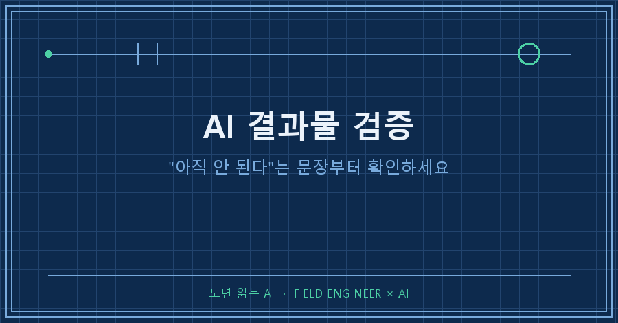
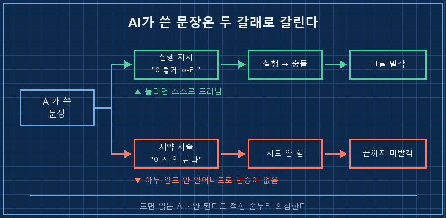
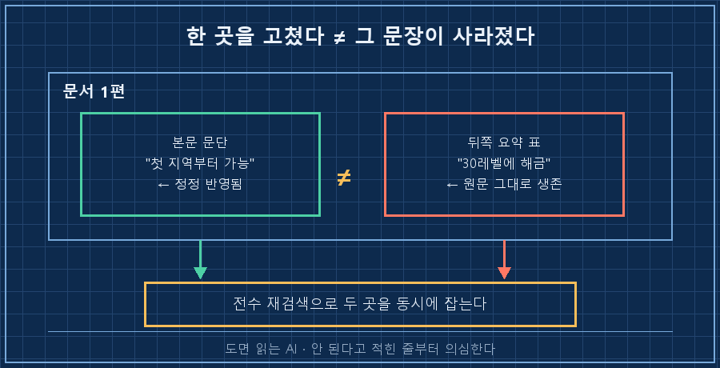
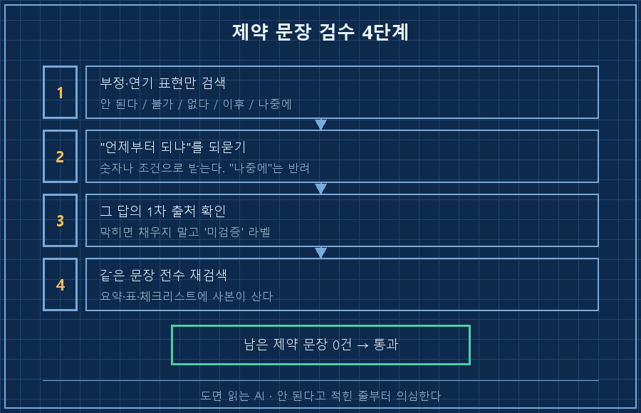

AI가 만든 문서를 검수할 때, 저는 늘 숫자와 절차만 봤습니다.
정작 저를 나흘 동안 세워둔 건 숫자가 아니라 한 줄짜리 제약 문장이었어요.
한 줄로 못 박고 시작할게요.
AI 결과물 검증에서 제일 늦게 걸리는 오류는 틀린 값이 아니라 "그건 아직 안 됩니다"라고 잘못 적힌 문장입니다. 틀린 값은 따라 하다 부딪혀서 그날 걸려요. 그런데 잘못된 제약은 나를 시도조차 안 하게 만들기 때문에, 부딪힐 일이 없어서 영영 안 걸립니다.
2026년 8월 기준이고, 주말에 하는 게임 공략 문서를 AI한테 여덟 편 만들게 하다가 겪은 일이에요. 소재는 게임이지만 AI한테 매뉴얼이나 절차서를 만들게 하는 일이면 그대로 옮겨집니다.
제 일은 만드는 쪽보다 확인하는 쪽에 가깝습니다. 십오 년째요.
도면대로 만들어졌는지 하나씩 대조하는 게 업이라, 틀린 값 찾는 눈은 어느 정도 있다고 생각했어요.
그런데 이번 건 제 검수 순서 자체가 못 잡는 종류였습니다.
1. 나흘 동안 아무 일도 일어나지 않았어요
8월 26일에 AI한테 장비 강화 관련 공략 문서를 한 편 만들게 했습니다. 그때 제 캐릭터는 레벨 8이었어요.
그 문서 안에 이런 취지의 문장이 있었습니다.
제작 담당 NPC는 네 번째 지역(확장팩 구간) 이후 본격 해금
→ 아이템 제작은 그때부터 시작읽고 나서 저는 제작 쪽을 아예 안 봤어요. 아직 안 되는 기능이라고 적혀 있었으니까요.
그렇게 레벨 8에서 20까지 갔습니다.
8월 30일, 이번엔 "제작은 어떻게 하는 거냐"고 물으면서 제작 전용 문서를 새로 만들라고 시켰어요.
그러다 걸렸습니다.
★오류 정정 (앞 문서 → 새 문서 작성 중 발견)
"네 번째 지역 이후 본격 해금"은 오류.
→ 실제: 제작 담당 NPC는 첫 지역 마을부터 배치돼 있다
→ 영향: 레벨 20인 지금 이미 하급 아이템을 만들 수 있었다나흘을 손해 봤다는 게 서늘한 게 아니었어요.
제가 이번에 안 물어봤으면 그 문서를 믿고 레벨 30까지 갔을 겁니다. 그때 가서 "왜 진작 안 열어봤지" 했겠죠..
2. 이 오류만 유독 안 잡히는 이유
곱씹어보니 AI가 써준 문장은 성격이 두 가지로 갈리더라고요.
하나는 실행 지시입니다. "이걸 여기서 이렇게 해라." 이건 제가 따라 하니까 틀리면 그 자리에서 부딪혀요. 화면에 안 나오거나, 값이 안 맞거나, 오류가 뜨거나요. 검증이 저절로 됩니다.
다른 하나는 제약 서술이에요. "이건 없다", "그건 나중에 된다", "지금은 안 된다."
이건 제가 따라 하면 아무 일도 안 일어납니다. 안 하는 게 지시니까요.
반응이 없으니 반증도 없고, 그래서 틀려도 조용히 살아남습니다.

| 문장 유형 | 예시 | 틀렸을 때 | 검증 주체 |
|---|---|---|---|
| 실행 지시 | "여기서 이 값을 넣어라" | 그 자리에서 안 되거나 값이 틀림 | 실행하면 자동 |
| 수치·사실 | "비용은 얼마다" | 화면 숫자와 대조되면 드러남 | 한 번만 보면 됨 |
| 제약 서술 | "아직 안 된다 / 그건 없다" | 아무 일도 안 일어남 | 아무도 안 함 |
세 번째 줄이 침묵하는 오류예요. 검수자가 따로 손대지 않으면 문서 수명 내내 안 걸립니다.
3. 그래서 검수 순서를 이렇게 바꿨습니다
전제는 단순해요. AI 산출물이 텍스트 파일(.md, .txt)로 저장돼 있고, 문자열 검색이 되는 편집기나 grep을 쓸 수 있으면 됩니다. 2026년 8월 기준으로 제가 쓰는 절차예요.
1단계. 제약 문장만 따로 뽑아냅니다.
전체를 다시 읽는 게 아니라 부정·연기 표현으로 한 번 걸러요.
grep -n "안 된다\|불가\|없다\|해금\|이후\|나중에\|추후" 문서.md2단계. 뽑힌 줄마다 "그럼 언제부터 되냐"를 숫자로 되묻습니다.
"나중에"라는 답은 반려예요. 레벨 몇부터, 어느 단계부터, 어떤 조건이 채워지면인지를 숫자나 조건으로 받아냅니다.
3단계. 그 답의 1차 출처를 확인시킵니다.
저는 이번에 새 문서를 만들게 하면서 근거를 표로 받았어요. 그 과정에서 앞 문서의 오류가 튀어나온 겁니다.
4단계. 고쳤으면 같은 문장이 문서 안에 또 있는지 전수로 다시 찾습니다.
이게 4단계인 이유는 다음 장에 있습니다.
확인 방법(성공 판정): 1단계 검색 결과에 남은 제약 문장이 전부 "언제부터 되는지"를 숫자나 조건으로 달고 있으면 통과예요. "나중에", "이후에"만 달린 줄이 하나라도 남으면 아직 미완입니다.
4. 고쳤는데 표 안에는 그대로 살아 있었어요
새 문서를 만들면서 앞 문서도 정정했습니다. 본문 해당 절에 정정 배너까지 붙였어요.
그런데 이 글을 쓰려고 원문을 다시 열어보니, 같은 문서 뒤쪽 레벨 구간 로드맵 표에 이 줄이 그대로 남아 있더라고요.
| 30~36 | 네 번째 지역 | 제작 NPC 해금 = 제작 시작 |본문은 "첫 지역부터 된다"로 고쳐졌는데, 표는 "30레벨에 열린다"로 남아 있는 상태였습니다.
문서 하나 안에서 앞뒤가 반대로 적혀 있었던 거예요.
고치고 나서 같은 문서와 옆 문서 네 편까지 전부 다시 훑었습니다.
잔존 검색 결과
- 해당 문서 : 정정 배너 1건 + 수정된 표 1건 (원래 표현 0건)
- 다른 문서 4편 : 0건AI 문서에서 한 곳을 고쳤다는 건 그 표현이 사라졌다는 뜻이 아닙니다. 요약·표·체크리스트처럼 같은 말이 다른 형식으로 반복되는 자리에는 원래 문장이 그대로 살아 있어요. 저는 이걸 표에서 발견했는데, 경로는 정직하게 적자면 우연이었어요. 원문을 다시 열지 않았으면 못 봤습니다.

5. 빠져 있어도 티가 안 나는 제약도 있습니다
반대 방향 사례도 하나 나왔어요.
새 문서 첫 장에 이런 경고가 붙었습니다. 게임에서 나오는 소모성 아이템 하나가 사실은 제작 재료라서, 급하다고 써버리면 나중에 제작 레시피를 못 채운다는 내용이었어요.
쓰지 말고 모아라. 제작 재료로 들어간다
(모르고 다 써버리는 게 1번 실수)
→ 전부 창고행. 예외 없음앞 문서엔 이 경고가 없었습니다. 없어도 아무도 몰라요. 쓰는 순간 잘 쓰이고, 손해는 몇십 시간 뒤에 재료가 모자랄 때 나타나니까요.
정리하면 제약 문장은 틀려도 안 걸리고, 아예 없어도 안 걸립니다. 그래서 따로 세는 수밖에 없어요.
이런 게 궁금하실 것 같아서
Q. AI한테 "틀린 거 있으면 알려줘"라고 하면 안 되나요?
그렇게 물으면 대개 "특별한 문제는 없습니다"가 돌아와요. 자기가 쓴 제약을 자기가 의심할 이유가 없거든요. 이번에도 앞 문서를 검토시킨 게 아니라 새 문서를 처음부터 만들게 했더니 오류가 나왔습니다. 검토보다 재작성이 오류를 잘 뱉는다는 게 이번 수확이에요!
Q. 제약 문장을 다 의심하면 검수가 너무 길어지지 않나요?
생각보다 몇 줄 안 됩니다. 실행 지시와 수치는 그냥 두고 부정·연기 표현만 걸러내면 문서 한 편에 보통 다섯에서 열 줄이에요. 그 줄들만 "언제부터 되냐"로 되물으면 십 분 안에 끝납니다. 저는 이걸 안 해서 나흘을 날렸고요.
Q. 출처 확인이 막혀서 답이 안 나오면요?
모른 채로 두고 라벨을 답니다. 이번 새 문서에도 확인 못 한 항목 네 건이 "미검증"으로 명시돼 있어요. 제작 비용 금액, 재료 종류, 요구 레벨 같은 것들인데, 확인 경로까지 같이 적혀 있습니다. 그럴듯하게 채워진 칸보다 이렇게 비워둔 칸이 훨씬 믿음이 가더라고요.

AI한테 매뉴얼을 맡기면 대개 "무엇을 하라"는 문장을 검수합니다. 그런데 저를 멈춰 세운 건 "하지 마라"와 "아직이다" 쪽이었어요.
다음에 AI가 만들어준 문서를 여실 때, 안 된다고 적힌 줄에 형광펜을 먼저 그어보시면 좋겠습니다.
이런 검수 절차는 실패한 순서까지 같이 makefield.ai에 남겨두고 있어요.
태그: #AI결과물검증 #AI가만든문서오류 #AI검수방법 #AI답변확인 #AI문서관리 #AI할루시네이션 #AI팩트체크 #AI에게일시키기 #AI결과물검수 #AI활용법 #AI실무활용 #문서검수 #AI에이전트 #개인AI에이전트 #도면읽는AI